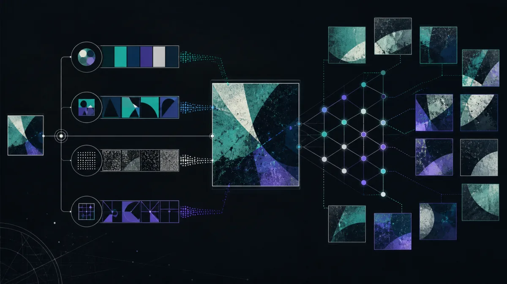

Источник
Можно найти более раннюю публикацию, подпись или версию изображения в большем размере.
Поиск по картинке помогает обнаружить открытые страницы с тем же или похожим изображением. Используйте найденные совпадения как отправную точку: окончательный вывод проверяйте по первоисточнику, дате и контексту.
Открыть в Telegram
Можно найти более раннюю публикацию, подпись или версию изображения в большем размере.
Страница и дата помогают понять, где снимок использовали и не вырван ли он из контекста.
Совпадение — подсказка, а не подтверждение личности, авторства или добросовестности собеседника.
Закрытые, удалённые и непроиндексированные страницы могут не найтись. Не загружайте документы, интимные материалы или фотографии несовершеннолетних без правового основания. Не используйте поиск для слежки, преследования, шантажа, мошенничества или обхода приватности.
Если цель проверки законна и у вас есть право передать изображение, начните с открытых совпадений и обязательно сверяйте результат с первоисточником.
Открыть в Telegram